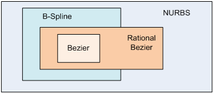

OpenGL Extensions have been developed continuously so we have to catch up it
Today I want to say something about z-buffer algorithm in OpenGL, you can not learn OpenGL good without z-buffer base
Abstract Buffer Objects: More efficient way to render with your GPU
Lighting, Shading interacts each other so I want to collating some data of them
立一个flag，开始读休谟的人性论。
在Visual Studio中添加lib的三种方法
* 每种方法也要复制相应的DLL文件到相应目录，或者设定DLL目录的位置，具体方法为："Project" -> "Properties" -> "Configuration Properties" -> "Debugging"，在"Working Directory"设置dll的路径就可以了
* 无论是设置DLL目录，或者是Lib目录，亦或是头文件的目录，都有release版本和debug版本的区分，每种版本的设置都是独立的，要分别设置。
* "Properties"可以在VS资源管理器右键项目名中选中，或者通过VS目录中的Project -> Properties打开
1. 添加工程的头文件目录："Project" -> "Properties" -> "C/C++" -> "General" -> "Additional Include Directories"：加上头文件存放目录 (例如当前项目目录中的include目录：$(ProjectDir)\include)。
2. 添加文件引用的lib静态库路径："Project" -> "Properties" -> "Linker" -> "General" -> "Additional Library Directories"：加上lib文件存放目录。
3. 然后添加工程引用的lib文件名："Project" -> "Properties" -> "Linker" -> "Input" -> "Additional Dependencies"：加上lib文件名。
Comment: 这种方法比较繁琐,且不直观,还要对debug版本和release版本作不同的配置,因为我们生成的两个版本的库可能放在不同的目录中的.
#ifdef _DEBUG
#pragma comment(lib,"..\\debug\\LedCtrlBoard.lib")
#else
#pragma comment(lib,"..\\release\\LedCtrlBoard.lib")
#endif
Comment: 这种方法直观,方便,且可以按如上直接区分出Debug版本和Release版本的不同目录.当然,通过宏,还可以区分更多版本.但是在指定目录时,不小心容易出错.
在VS的Solution Explorer (解决方案视图)中, 选中工程 -> 右键 -> "Add" -> "Exisiting items" -> 选择lib文件 -> 确定.
Comment: 这个方法适用于在我的工程的debug版本和Release版本中都使用同一个lib库文件时.这样就省去了方法1配置环境的繁琐,也省去了方法2种语句的可能性错误发生.
C语言中字符串型传值
//1st way
void openfile(char* filename, int mode)
{
FILE *fp = NULL;
if (fp == NULL)
{
printf("%s can not open", filename);
exit(1);
}
else
printf("%s open successfully\n", filename);
}
//2nd way
void openfile(char filename[100], int mode)
{
FILE *fp = NULL;
if (fp == NULL)
{
printf("%s can not open", filename);
exit(1);
}
else
printf("%s open successfully\n", filename);
}
Teeth Project + Teeth Slice + 4 Bezier Curves per Slice + Bezier Surface per two Curves
Remaining
生活一分一秒的过, 你的斗志不是燃烧一刻，而是要每分每秒的燃烧, 即使不燃烧，至少不能让它熄灭。你要的斗志从来都不在逆境中, 而在你做成一件事后这件事能给你带来的成就感以及未来, 那是能指导你每分每秒都燃烧的火药。
VS - 强大的Link Time Code Generation
glMatrixMode的三个参数：GL_PROJECTION,GL_MODELVIEW,GL_TEXTURE
OpenGL — 纹理过滤函数glTexParameteri()
OpenGL2.0及以上版本中gl，glut，glew，glfw，mesa等部件的关系
二维数组的动态分配及参数传递
//(1)已知第二维
char (*a)[N];//指向数组的指针
a = (char (*)[N])malloc(sizeof(char *) * m);
printf("%d\n", sizeof(a));//4，指针
printf("%d\n", sizeof(a[0]));//N，一维数组
free(a);
//(2)已知第一维
char* a[M];//指针的数组
int i;
for(i = 0; i < M; i++)
a[i] = (char *)malloc(sizeof(char) * n);
printf("%d\n", sizeof(a));//4*M，指针数组
printf("%d\n", sizeof(a[0]));//4，指针
for(i = 0; i < M; i++)
free(a[i]);
//(3)已知第一维，一次分配内存(保证内存的连续性)
char* a[M];//指针的数组
int i;
a[0] = (char *)malloc(sizeof(char) * M * n);
for(i = 1; i < M; i++)
a[i] = a[i -1] + n;
printf("%d\n", sizeof(a));//4*M，指针数组
printf("%d\n", sizeof(a[0]));//4，指针
free(a[0]);
//(4)两维都未知
char **a;
int i;
a = (char **)malloc(sizeof(char *) * m);//分配指针数组
for(i = 0; i < m; i++)
{
a[i]=(char *)malloc(sizeof(char) * n);//分配每个指针所指向的数组
}
printf("%d\n", sizeof(a));//4，指针
printf("%d\n", sizeof(a[0]));//4，指针
for(i=0; i < m; i++)
{
free(a[i]);
}
free(a);
//(5)两维都未知，一次分配内存(保证内存的连续性)
char **a;
int i;
a = (char **)malloc(sizeof(char *) * m);//分配指针数组
a[0] = (char *)malloc(sizeof(char) * m * n);//一次性分配所有空间
for(i = 1; i < m; i++)
{
a[i] = a[i-1] + n;
}
printf("%d\n", sizeof(a));//4，指针
printf("%d\n", sizeof(a[0]));//4，指针
free(a[0]);
free(a);
C++动态分配二维数组
//(1)已知第二维
char (*a)[N];//指向数组的指针
a = new char[m][N];
printf("%d\n", sizeof(a));//4，指针
printf("%d\n", sizeof(a[0]));//N，一维数组
delete[] a;
//(2)已知第一维
char* a[M];//指针的数组
for(int i = 0; i < M; i++)
a[i] = new char[n];
printf("%d\n", sizeof(a));//4*M，指针数组
printf("%d\n", sizeof(a[0]));//4，指针
for(i = 0; i < M; i++)
delete[] a[i];
//(3)已知第一维，一次分配内存(保证内存的连续性)
char* a[M];//指针的数组
a[0] = new char[M*n];
for(int i = 1; i < M; i++)
a[i] = a[i-1] + n;
printf("%d\n", sizeof(a));//4*M，指针数组
printf("%d\n", sizeof(a[0]));//4，指针
delete[] a[0];
//(4)两维都未知
char **a;
a = new char* [m];//分配指针数组
for(int i = 0; i < m; i++)
{
a[i] = new char[n];//分配每个指针所指向的数组
}
printf("%d\n", sizeof(a));//4，指针
printf("%d\n", sizeof(a[0]));//4，指针
for(i = 0; i < m; i++)
delete[] a[i];
delete[] a;
//(5)两维都未知，一次分配内存(保证内存的连续性)
char **a;
a = new char* [m];
a[0] = new char[m * n];//一次性分配所有空间
for(int i = 1; i < m; i++)
{
a[i] = a[i-1] + n;//分配每个指针所指向的数组
}
printf("%d\n", sizeof(a));//4，指针
printf("%d\n", sizeof(a[0]));//4，指针
delete[] a[0];
delete[] a;
Reference:http://www.cnblogs.com/bigshow/archive/2009/01/03/1367661.html
Bezier曲线、B样条和NURBS都是根据控制点来生成曲线的，那么他们有什么区别了？
Bezier曲线只是B样条的一个特例而已，而B样条又是NURBS的一个特例，它们的关系可以图示为：
